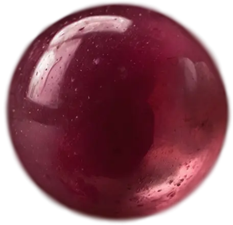

<section class="about mt-0">
    <div class="about__body">
        <div class="about__body-text">
            <h2>О нас</h2>
            <p>
                <span>С 2012 года Bubble Mania стала крупнейшим поставщиком ингредиентов для Bubble Tea
                    в России и СНГ.</span>
                <br><br>
                С тех пор напиток Bubble Tea плотно ассоциируется с Bubble Mania, ведь мы не только создали рынок этого
                напитка, но и, благодаря нашей миссии по сохранению традиций его приготовления, по-прежнему предлагаем
                нашим гостям настоящий Bubble Tea из Тайваня – именно такой, каким его создали на родине и как его
                оценили во всём мире.
            </p>
        </div>
        <div class="about__body-bubble desk">
            <div class="about__body-bubble-big">
                
                <span>2012</span>
                <p>В России открылась первая чайная станция Bubble Tea – это была Bubble Mania</p>
            </div>

            <div class="about__body-bubble-low">
                
                <span>2014</span>
                <p>
                    Открытие третьей BUBBLEMANIA
                    в Москве, а также открытия в других городах РФ
                </p>
            </div>
            <div class="about__body-bubble-low">
                
                <span>2023</span>
            </div>
            <div class="about__body-bubble-low">
                
                <span>2015</span>
                <p>
                    Открытие первой BUBBLEMANIA
                    в Алматы (Казахстан).
                    А также четвертой в Москве
                </p>
            </div>
            <div class="about__body-bubble-low">
                
                <span>2021</span>
            </div>
            <div class="about__body-bubble-low">
                
                <span>2019</span>
            </div>
            <div class="about__body-bubble-low">
                
                <span>2025</span>
            </div>
            <div class="about__body-bubble-medium">
                
                <span>2017</span>
                <p>
                    Открытие пятой
                    и шестой BUBBLEMANIA
                    в Москве. А также открытие точки в Уфе
                </p>
            </div>
            <div class="about__body-bubble-medium">
                
                <span>2020</span>
                <p>
                    Открытие BUBBLEMANIA в Домодедово
                </p>
            </div>
            <div class="about__body-bubble-medium">
                
                <span>2013</span>
                <p>
                    Открытие чайных станций BUBBLEMANIA в Москве и других городов РФ
                </p>
            </div>
            <div class="about__body-bubble-medium">
                
                <span>2024</span>
                <p>
                    Открытие BUBBLEMANIA в Санкт-Петербурге
                </p>
            </div>
            <div class="about__body-bubble-medium">
                
                <span>2016</span>
                <p>
                    Открытие второй
                    и третьей BUBBLEMANIA
                    в Алматы (Казахстан).
                    А также третьей
                    в Тюмени
                </p>
            </div>
            <div class="about__body-bubble-medium">
                
                <span>2022</span>
            </div>
            <div class="about__body-bubble-low">
                
                <span>2011</span>
                <p>
                    Зарождение бренда.
                    Обучение на о. Тавань у топ 3 баббл-мастера в мире!
                </p>
            </div>
            <div class="about__body-bubble-sobig">
                
                <span>2018</span>
                <p>Ребрендинг. Открытие
                    шестой BUBBLEMANIA
                    в Москве, а также открытие второй в Уфе</p>
            </div>
        </div>
        
        
        
        
        
        
        
        <ul class="about__body-list mob">
            <li>
                2011 - Зарождение бренда. Обучение на о. Тавань у топ 3 баббл-мастера в мире!
            </li>
            <li>2012 - В России открылась первая чайная станция Bubble Tea – это была Bubble Mania</li>
            <li>2013 - Открытие чайных станций BUBBLEMANIA в Москве и других городов РФ</li>
            <li>2014 - Открытие третьей BUBBLEMANIA
                в Москве, а также открытия в других городах РФ</li>
            <li>2015 - Открытие первой BUBBLEMANIA
                в Алматы (Казахстан). А также четвертой в Москве.</li>
            <li>2016 - Открытие второй и третьей BUBBLEMANIA в Алматы (Казахстан).
                А также третьей в Тюмени</li>
            <li>2017 - Открытие пятой и шестой BUBBLEMANIA в Москве. А также открытие точки в Уфе</li>
            <li>2018 - Ребрендинг. Открытие
                шестой BUBBLEMANIA в Москве, а также открытие второй в Уфе </li>
            <li>2020 - Открытие BUBBLEMANIA в Домодедово</li>
            <li>2024 - Открытие BUBBLEMANIA в Санкт-Петербурге</li>
        </ul>
    </div>
</section>